건축산업기사 (2016-03-06 기출문제)
1과목: 건축계획
1. 업무시설 중 사무소에서 장애인 등의 편의를 위해 건축물의 주출입구에 턱낮추기를 하는 경우, 주출입구와 통로의 높이 차이는 최대 얼마 이하가 되도록 하여야 하는가?
- 1cm
- 2cm
- 4cm
- 5cm
(정답률: 80%)

2. 주택 식당의 배치 유형 중 다이닝 키친(DK형)에 관한 설명으로 옳은 것은?
- 대규모 주택에 적합한 유형으로 쾌적한 식당의 구성이 용이하다.
- 싱크대와 식탁의 거리가 멀어지는 관계로 주부의 동성이 길다는 단점이 있다.
- 부엌의 일부에 간단한 식탁을 설치하거나 식당과 부엌을 하나로 구성한 형태이다.
- 거실과 식당이 하나로 된 형태로 거실의 분위기에서 식사 분위기의 연출이 용이하다.
(정답률: 83%)
3. 더운 지방의 좁은 대지 조건에 적절한 형식으로 각 주호 공동의 옥외 정원을 갖는 주택 형식은?
- 로 하우스
- 타운 하우스
- 중정형 주택
- 테라스 하우스
(정답률: 65%)
4. 건축설계과정에 관한 설명으로 옳지 않은 것은?
- 건축주의 의도를 충분히 이해한다.
- 건축의 조형을 내부 기능에 못지 않게 중요시 한다.
- 설비시스템의 결정은 건축설계의 완성 후 진행한다.
- 기본설계는 기획시의 의도를 구체적인 형태로 발전시키는 단계이다.
(정답률: 78%)
5. 근린생활권에 관한 설명으로 옳지 않은 것은?
- 인보구 : 15 ~ 40호 기준
- 근린분구 : 400 ~ 500호 기준
- 인보구 : 어린이 놀이터가 중심
- 근린분구 : 초등학교가 중심, 우체국 등이 설립
(정답률: 77%)
6. 사무소 건축에서 엘리베이터 조닝(zoning)에 관한 설명으로 옳지 않은 것은?
- 엘리베이터 설치비를 절약할 수 있다.
- 고층부 엘리베이터를 고속화할 수 있다.
- 일주시간이 단축되어 수송능력이 증가한다.
- 조닝의 수가 증가하면 승강로 면적도 증가한다.
(정답률: 68%)
7. 듀플렉스형 공동주택에 관한 설명으로 옳지 않은 것은?
- 소규모 주거형식에는 비경제적이다.
- 엘리베이터의 정지층수가 많아지므로 이용성이 좋다.
- 주간의 생활공간과 야간의 생활공간을 층별로 나눌 수 있다.
- 각 세대가 2개층으로 구성되어 독립성이 좋고 전용면적비가 커진다.
(정답률: 81%)
8. 학교의 운영방식에 관한 설명으로 옳지 않은 것은?
- 종합교실형(A형)은 초등학교 저학년에 권장되는 운영방식이다.
- 교과교실형(V형)은 각 교과에 순수율이 높은 교실이 주어진다.
- 플라톤형(P형)은 학급, 학년을 없애고 학생들이 각자 능력에 따라서 교과를 택한다.
- 일반교실 · 특별교실형(U · V형)은 우리나라 중 · 고등학교에서 가장 많이 이용되고 있다.
(정답률: 78%)
9. 양식주택과 비교한 한식주택의 특징 설명으로 옳지 않은 것은?
- 가구는 중요한 내용물이다.
- 위치에 따라 실이 구분된다.
- 실의 기능은 융통성이 높다.
- 좌식생화을 기준으로 구성된다.
(정답률: 84%)
10. 공장건축의 형식 중 집중형(block type)에 관한 설명으로 옳지 않은 것은?
- 확장성이 높다.
- 건축비가 저렴하다.
- 비교적 공간효율이 높다.
- 내부배치 변경에 탄력성이 있다.
(정답률: 52%)
11. 학교건축의 교실 배치 유형 중 클러스터형을 가장 올바르게 설명한 것은?
- 교실을 1층에만 배치하는 방법
- 복도를 따라 교실을 배치하는 방법
- 일반교실과 특별교실을 섞어 배치하는 방법
- 교실을 소규모 단위로 분할하여 배치하는 방법
(정답률: 75%)
12. 주택설계의 기본방향과 가장 거리가 먼 것은?
- 가장 중심의 주거
- 가사노동의 경감
- 생활의 쾌적감 증대
- 개인생활의 프라이버시 확립
(정답률: 89%)
13. 상점건축에서 쇼윈도우(show window)의 눈부심을 방지하는 방법으로 옳지 않은 것은?
- 곡면유리를 사용한다.
- 유리면을 경사지게 한다.
- 차양을 설치하여 외부에 그늘이 지게 한다.
- 쇼윈도우 내부를 외부에 비해 어둡게 한다.
(정답률: 86%)
14. 학교건축에 관한 설명으로 옳지 않은 것은?
- 체육관은 표준적으로 농구코트를 둘 수 있는 크기가 필요하다.
- 일반적으로 교실채광은 칠판을 향해 좌측채광을 원칙으로 한다.
- 강당과 체육관을 겸용할 경우 강당의 목적에 치중하여 계획하는 것이 좋다.
- 다목적 교실은 여러 가지 목적에 맞는 융통성 있는 공간으로서의 성격을 갖는다.
(정답률: 82%)
15. 아파트 건축의 평면형식에 관한 설명으로 옳지 않은 것은?
- 편복도형은 프라이버시 확보가 가장 용이하다.
- 집중형은 각 세대의 일조 조건을 균등하게 할 수 없다.
- 홀형은 통행부 면적이 좁으므로 건물의 이용도가 높다.
- 중복도형은 대지의 이용률이 높으나 채광 및 통풍이 좋지 않다.
(정답률: 76%)
16. 아파트 단지 내 어린이 놀이터 계획에 관한 설명으로 옳지 않은 것은?
- 차량 통행이 빈번한 곳은 피한다.
- 어린이가 안전하게 접근할 수 있어야 한다.
- 어린이가 놀이에 열중할 수 있도록 외부로부터 시선의 차단되어야 한다.
- 놀이터의 시설은 보기에 좋고 튼튼해야 하며 놀이를 제한하거나 획일화한 것은 좋지 않다.
(정답률: 90%)
17. 오피스 건축에 사용되는 아트리움에 관한 설명으로 옳지 않은 것은?
- 건축물에 조형적 · 상징적 독자성(identity)을 부여한다.
- 공간적으로는 중간영역으로서 매개와 결절점의 기능을 수용한다.
- 주로 유리재료로 구성되므로 실내공간의 에너지 절약 효과는 기대할 수 없다.
- 도심내의 오피스와 가로 사이에서 도시민을 위한 휴식과 커뮤니케이션 장소로 활용된다.
(정답률: 81%)
18. 상점 건축의 매장 내 쇼케이스(show case)를 배치할 때 고려할 사항과 가장 거리가 먼 것은?
- 고객의 동선
- 종업원의 동선
- 상품의 효과적 진열
- 상품의 반출입 동선
(정답률: 75%)
19. 사무소 건축의 엘리베이터계획에 관한 설명으로 옳지 않은 것은?
- 가능한 한 1곳에 집중하여 배치한다.
- 출입구에 바짝 접근해 있지 않도록 한다.
- 대수산정은 1일 평균 사용인원을 기준으로 산정한다,
- 외래자에게 직접 잘 알려질 수 있는 위치에 배치한다.
(정답률: 80%)
20. 다음 중 고층 사무소 건물의 코어 내에 들어가는 공간으로 가장 부적당한 것은?
- 화장실
- 계단실
- 공조실
- 변전실
(정답률: 63%)
2과목: 건축시공
21. 침엽수에 관한 설명으로 옳지 않은 것은?
- 일반적으로 구조용재로 사용된다.
- 직선부재를 얻기에 용이하다.
- 종류로는 소나무, 잣나무 등이 있다.
- 활엽수에 비해 비중과 경도가 크다.
(정답률: 75%)
22. 입찰 및 계약제도에 관한 설명으로 옳은 것은?
- 공동도급 방식은 자본력, 기술력 등 시공능력이 증진된다.
- 실비정산식 시공계약 제도는 설계가 불명확하여 양질의 공사를 기대하기 어려울 때 채택한다.
- 로우어리미트(lower limit)는 최저가로 응찰한 업자의 입찰을 무효로 하는 것이다.
- 특명입찰이란 공사수행에 적정한 수개의 업자를 지명하여 경쟁 입찰시키는 방식이다.
(정답률: 61%)
23. 콘크리트 배합설계 시 용적계산에 포함시켜야 하는 혼화재료는?
- A.E제
- 지연제
- 감수제
- 포졸란
(정답률: 70%)
24. 지붕재료로 적당하지 않은 것은?
- 천연슬레이트
- 전도성 타일
- 금속판
- 아스팔트 싱글
(정답률: 69%)
25. 콘크리트 강도에 관한 설명으로 옳지 않은 것은?
- AE제를 혼합하면 워커빌리티가 향상된다.
- 물-시멘트비가 작을수록 콘크리트 강도는 저하된다.
- 한중 콘크리트는 동해방지를 위한 양생을 하여야 한다.
- 콘크리트 양생이 불량하면 콘크리트 강도가 저하된다.
(정답률: 76%)
26. 벽돌 쌓기 시 주의사항으로 옳지 않은 것은?
- 모르타르강도는 벽돌강도보다 작아야 한다.
- 도면 또는 공사시방서에서 정한 바가 없을 때에는 영식 쌓기 또는 화란식 쌓기로 한다.
- 각부를 가급적 동일한 높이로 쌓아 올라가고 벽면의 일부 또는 국부적으로 높게 쌓지 않는다.
- 가로 및 세로줄눈의 너비는 도면 또는 공사시방서에 정한 바가 없을 때에는 10mm를 표준으로 한다.
(정답률: 67%)
27. 일반적으로 기준층의 철근공사에서 철근 조립 시 배근순서로 옳은 것은?
- 기둥 - 벽 - 보 - 바닥
- 기둥 - 보 - 바닥 - 벽
- 바닥 - 기둥 - 벽 - 보
- 바닥 - 기둥 - 보 - 벽
(정답률: 70%)
28. 네트워크 공정표에 관한 설명으로 옳지 않은 것은?
- CPM공정표는 네트워크 공정표의 한 종류이다.
- 요소작업의 시작과 작업기간 및 작업완료점을 막대그림으로 표시한 것이다.
- PERT공정표는 일정계산 시 단계(Event)를 중심으로 한다.
- 공사계획의 전모와 공사전체의 파악이 용이하다.
(정답률: 75%)
29. 콘크리트 구조물의 크리프(Creep)의 증가원인으로 옳지 않은 것은?
- 물시멘트비가 클수록 크리프는 증가한다.
- 하중이 클수록 크리프는 증가한다.
- 단면의 치수가 클 경우 크리프는 증가한다.
- 습도가 낮을 경우 크리프는 증가한다.
(정답률: 49%)
30. 지붕재료의 요구 성능으로 옳지 않은 것은?
- 방화적이고 열전도가 잘 될 것
- 수밀, 내수적일 것
- 가볍고 내구성일 클 것
- 시공이 용이할 것
(정답률: 77%)
31. 슬래브 및 보 밑 거푸집 설계 시 고려하는 하중과 가장 거리가 먼 것은?
- 굳지 않은 콘크리트의 중량
- 작업하중
- 충격하중
- 굳지 않은 콘크리트의 측압
(정답률: 66%)
32. 공통가설공사에 해당되지 않는 것은?
- 비계 설치
- 수평규준틀 설치
- 현장사무실 축조
- 터파기 공사
(정답률: 62%)
33. 기초말뚝의 허용지지력을 구하는 방법 중 지지말뚝과 마찰말뚝에 공용으로 사용할 수 있는 방법은?
- 함수량시험에 의한 방법
- 토질시험에 의한 방법
- 말뚝재하시험에 의한 방법
- 지반의 허용응력도에 의한 방법
(정답률: 75%)
34. 건설공사 공동도급의 특징이 아닌 것은?
- 손익분담의 공동계산
- 단일 목적성
- 위험의 증가
- 융자력 증대
(정답률: 74%)
35. 지내력시험의 종류에 해당하지 않는 것은?
- 평판재하시험
- 동재하시험
- 1축압축시험
- 정재하시험
(정답률: 68%)
36. 원가절감 기법으로 많이 쓰이는 VE(Value Engineering)의 적용대상이 아닌 것은?
- 원가절감 효과가 큰 것
- 수량이 적은 것
- 공사의 개선 효과가 큰 것
- 공사비 절감 효과가 큰 것
(정답률: 78%)
37. 프리캐스트 콘크리트 커튼윌의 줄눈폭 허용차는?
- ±1mm
- ±3mm
- ±5mm
- ±7mm
(정답률: 52%)
38. 건축재료 중 합성수지에 대한 특징으로 옳지 않은 것은?
- 콘크리트보다 흡수율이 적다.
- 표면이 매끈하며 착색이 자유롭고 광택이 좋다.
- 내열성(耐熱性)이 콘크리트보다 낮다.
- 강도에서 인장강도 및 압축강도는 낮으나, 탄성(彈性)이 금속재보다 우수하다.
(정답률: 56%)
39. 보강 블록 공사에 대한 설명으로 옳지 않은 것은?
- 사춤콘크리트를 다져 넣을 때에는 철근이 이동하지 않게 한다.
- 콘크리트용 블록은 물축임하지 않는다.
- 가로근은 세로근과의 교차부에 모두 결속선으로 결속한다.
- 세로근은 기초에서 윗층 테두리보까지 철근을 이음하여 배근한다.
(정답률: 35%)
40. 골재의 함수상태에 관한 설명으로 옳지 않은 것은?
- 흡수량 : 표면건조내부포화상태-절건상태
- 유효흡수량 : 표면건조내부포화상태-기건상태
- 표면수량 : 습윤상태-기건상태
- 함수량 : 습윤상태-절건상태
(정답률: 61%)
3과목: 건축구조
41. 콘크리트구조에서 허용균열폭 결정 시 고려사항과 가장 거리가 먼 것은?
- 구조물의 사용목적
- 소요내구성
- 콘크리트 강도
- 환경조건
(정답률: 43%)
42. SN400A로 표기된 강재에 관한 설명으로 옳은 것은?
- 일반구조용 압연강재이다.
- 용접구조용 압연강재이다.
- 건축구조용 압연강재이다.
- 항복강도가 400MPa이다.
(정답률: 58%)
43. 강구조 기둥 압축재에 대한 설명으로 옳지 않은 것은?
- 압축재는 단면적이 클수록 저항성능이 우수하다.
- 압축재는 단면2차모멘트가 클수록 저항성능이 우수하다.
- 압축재는 단면2차반지름이 클수록 저항성능이 우수하다.
- 압축재는 세장비가 클수록 저항성능이 우수하다.
(정답률: 56%)
44. 콘크리트에서 보통 골재를 사용하였을 경우 탄성계수비를 구하면? (단, KCI2012기준, fck=24MPa, Es=2.0×105MPa)
- 6.85
- 7.75
- 9.85
- 10.85
(정답률: 44%)
45. 강도설계법으로 철근콘크리트보를 설계시 공칭모멘트 강도 Mn=150kN·m, 강도감소계수 ø=0.85일 때 설계모멘트(Mu) 값은?
- 95.6 kN·m
- 114.8 kN·m
- 127.5 kN·m
- 176.5 kN·m
(정답률: 68%)
46. 연약지반에 대한 대책으로 틀린 것은?
- 지반개량공법을 실시한다.
- 말뚝기초를 적용한다.
- 이질지정을 적용한다.
- 건물을 경량화한다.
(정답률: 62%)
47. 그림과 같은 구조물에서 지점 A의 수평반력은?
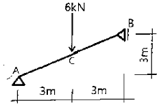
- 3 kN
- 4 kN
- 5 kN
- 6 kN
(정답률: 48%)
48. 그림과 같은 2방향 슬래브를 1방향 슬래브로 보고 계산할 수 있는 경우는? (단, L > S 일 경우)
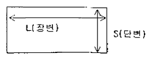
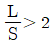
일 경우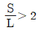
일 경우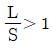
일 경우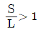
일 경우
(정답률: 55%)
49. 지름 30mm, 길이 5m인 봉강에 50kN의 인장력이 작용하여 10mm 늘어났을 때의 인장응력 σt와 변형률 ε은?
- σt = 56.45MPa, ε = 0.0015
- σt = 65.66MPa, ε = 0.0015
- σt = 70.74MPa, ε = 0.0020
- σt = 94.53MPa, ε = 0.0020
(정답률: 55%)
50. 그림과 같은 단순보에서 C점의 처짐값(δc)은? (단, 보의 단면은 600mm×600mm 이고, 탄성계수는 E=2.0×104 MPa이다.)
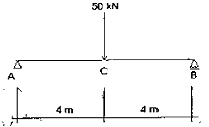
- 1.53mm
- 2.47mm
- 3.56mm
- 4.58mm
(정답률: 44%)
51. 그림과 같은 목재보의 최대 처짐은? (단, =10,000MPa이고 자중은 무시한다.)
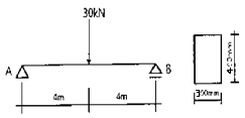
- 10mm
- 15mm
- 20mm
- 25mm
(정답률: 43%)
52. 단면 각 부분의 미소면적 dA에 직교좌표 원점까지의 거리 r의 제곱을 곱한 합계를 그 좌표에 대한 무엇이라 하는가?
- 단면극2차모멘트
- 단면2차모멘트
- 단면2차반경
- 단면상승모멘트
(정답률: 46%)
53. 건축물 전체에 작용하는 풍압력의 크기를 산정할 때 관계 없는 것은?
- 풍속
- 건축물의 높이
- 건축물의 형태
- 건축물의 중량
(정답률: 57%)
54. 그림은 강도설계법에서 단근장방형보의 응력도를 표시한 것이다. 압축력 C값으로 옳은 것은? (단, fck=21MPa, fy=300MPa, b=250mm)
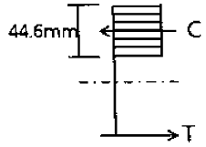
- 189 kN
- 199 kN
- 209 kN
- 219 kN
(정답률: 48%)
55. 그림과 같이 E점에 4kN의 집중하중이 45° 경사지게 작용했을 때 AD부재의 축 방향력은? (단, + : 인장, ― : 압축)
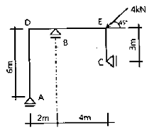
- -√2kN
- √2kN
- -2√2kN
- 2√2kN
(정답률: 32%)
56. 그림과 같은 겔버보에서 A지점의 수직반력은?
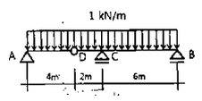
- 1.5 kN
- 2.0 kN
- 2.5 kN
- 3.0 kN
(정답률: 48%)
57. 강구조 관련 용어에 관한 설명으로 옳지 않은 것은?
- 턴버클 - 강재보와 콘크리트슬래브 사이의 미끄럼 방지
- 커버플레이트 - 플랜지 보강용으로 휨모멘트에 저항
- 스캘럽 - 보와 기둥의 용접접합 시 반원형으로 웨브를 잘라낸 부분
- 엔드탭 - 용접결함을 방지하기 위해 용접 단부에 임시로 설치한 보조강판
(정답률: 44%)
58. KCI에 따른 나선철근 기둥과 관련된 구조기준으로 틀린 것은?
- 현장치기콘크리트 공사에서 나선철근 지름은 10mm 이상으로 하여야 한다.
- 나선철근의 순간격 20mm이상, 80mm이하이어야 한다.
- 압축부재의 축방향 주철근 단면적은 전체 단면적의 0.01배 이상, 0.08배 이하로 하여야 한다.
- 나선철근으로 둘러싸인 압축부재의 주철근은 최소 6개를 배근하여야 한다.
(정답률: 49%)
59. 강도설계법에 의한 철근콘크리트 직사각형 보에서 콘크리트가 부담할 수 있는 공칭전단강도는? (단, fck=24MPa, b=300mm, d=500mm, 경량콘크리트계수는 1)
- 69.3 kN
- 82.8 kN
- 91.9 kN
- 122.5 kN
(정답률: 43%)
60. 직경이 50mm이고, 길이가 2m인 강봉에 100kN의 축방향 인장력이 작용할 때 이 강봉의 재축방향 변형량은? (단, 강봉의 탄성계수 E=2.0×105MPa)
- 0.51 mm
- 1.12mm
- 1.53 mm
- 2.04 mm
(정답률: 37%)
4과목: 건축설비
61. 다음 설명에 알맞은 통기방식은?
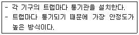
- 루프 통기방식
- 각개 통기방식
- 신정 통기방식
- 회로 통기방식
(정답률: 83%)
62. 분기회로 구성 시 유의사항에 관한 설명으로 옳지 않은 것은?
- 전등회로와 콘센트회로는 별도의 회로로 한다.
- 같은 스위치로 점멸되는 전등은 같은 회로로 한다.
- 습기가 있는 장소의 수구는 가능하면 별도의 회로로 한다.
- 분기회로의 전선 길이는 60m 이하로 하는 것이 바람직하다.
(정답률: 65%)
63. 공기조화방식 중 전공기방식에 관한 설명으로 옳지 않은 것은?
- 반송동력이 적게 든다.
- 겨울철 가습이 용이하다.
- 실내의 기류분포가 좋다.
- 실의 유효 스페이스가 증대된다.
(정답률: 53%)
64. 급수의 오염 원인과 가장 거리가 먼 것은?
- 워터 해머
- 배관의 부식
- 크로스 커넥션
- 저수탱크의 정체수
(정답률: 69%)
65. 다음과 같은 조건에서 북측에 위치한 면적 12m2인 콘크리트 외벽체를 통한 관류에 의한 손실 열량은?
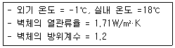
- 383.7W
- 411.0W
- 429.0W
- 468.0W
(정답률: 47%)
66. 건축화조명방식 중 천장면 이용방식에 속하지 않는 것은?
- 광창조명
- 다운라이트
- 광천장조명
- 라인라이트
(정답률: 59%)
67. 백화점에서의 밀도율 산정방법으로 옳은 것은? (단, A : 2층 이상 매장면적 합계(m2), CTU: 수송능력 합계(엘리베이터, 에스컬레이터 총 수송능력)(인/h) 이다. )
- CTU/A
- A/CTU
- CTU/(A+CTU)
- (A+CTU)/CTU
(정답률: 51%)
68. 금속관에 부설되는 전선의 절연피복을 포함한 총 단면적은 금속관 내 단면적의 최대 몇 % 이하가 되어야 하는가?
- 20%
- 30%
- 40%
- 50%
(정답률: 40%)
69. 건구온도 20℃, 상대습도 50%인 습공기 1000m3/h를 30℃로 가열하였을 때 가열량(현열)은? (단, 습공기의 밀도는 1.2kg/m3, 비열은 1.01kJ/kg·K 이다.)
- 1.7kW
- 2.5kW
- 3.4kW
- 4.3kW
(정답률: 37%)
70. 옥내 수평주관에 사용하며, 공공 하수관으로부터의 유독가스를 차단하기 위해 사용하는 트랩은?
- S트랩
- U트랩
- 벨트랩
- 드럼트랩
(정답률: 65%)
71. 다음 중 소방시설에 속하지 않는 것은?
- 소화설비
- 피난설비
- 경보설비
- 방화설비
(정답률: 49%)
72. 급탕설비에 관한 설명으로 옳지 않은 것은?
- 직접가열식은 열효율이 좋다.
- 강제순환식 급탕법은 순환펌프로 순환시킨다.
- 중력식 급탕법은 탕의 순환이 온도차에 의해 이루어진다.
- 직접가열식은 대형 건축물의 급탕설비에 가장 적합하다.
(정답률: 61%)
73. 다음과 같은 조건에서 냉방시 외기 3000m3/h가 실내로 인입될 때 외기에 의한 현열 부하는?
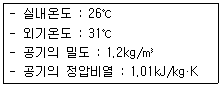
- 840W
- 3500W
- 5⑤0W
- 8720W
(정답률: 57%)
74. 터보식 냉동기에 관한 설명으로 옳지 않은 것은?
- 흡수식에 비해 소음 및 진동이 심하다.
- 피스톤의 왕복운동에 의해 냉매증기를 압축한다.
- 출력이 지나치게 낮은 경우 서징 현상이 발생한다.
- 대용량에서는 압축효율이 좋고 비례 제어가 가능하다.
(정답률: 44%)
75. LPG와 LNG에 관한 설명으로 옳은 것은?
- LPG는 LNG보다 비중이 작다.
- LNG는 가스공급을 위해 큰 투자가 들지 않는다.
- LPG의 가스누출검지기는 반드시 천장에 설치해야 한다.
- LNG는 도시가스용으로 널리 사용되고 주성분은 메탄가스이다.
(정답률: 57%)
76. 급수방식에 관한 설명으로 옳지 않은 것은?
- 수도직결방식은 2층 이하의 주택 등과 같이 소규모 건물에 주로 사용된다.
- 압력수조방식은 미관 및 구조상 유리하며 급수 압력의 변동이 없는 특징이 있다.
- 고가수조방식은 수전에 미치는 압력의 변동이 적으며 취급이 간단하고 고장이 적다.
- 펌프직송방식은 고가수조의 설치가 요구되지는 않으나 펌프의 설비비가 높아진다.
(정답률: 53%)
77. 보일러의 스케일(Scale)에 관한 설명으로 옳지 않은 것은?
- 워터해머를 일으킨다.
- 보일러 전열면의 과열 원인이 된다.
- 열의 전도를 방해하고 보일러 효율을 불량하게 한다.
- 수처리장치 등을 이용하여 발생을 방지할 수 있다.
(정답률: 59%)
78. 배관의 신축이음 방법에 속하지 않는 것은?
- 유니온 이음
- 슬리브 이음
- 벨로즈 이음
- 스위블 조인트
(정답률: 47%)
79. 증기난방과 비교한 온수난방의 특징으로 옳지 않은 것은?
- 소요방열면적이 작아 설비비가 낮다.
- 열용량이 커서 예열시간이 길게 소요된다.
- 한랭지에서 장시간 운전정지시 동결우려가 있다.
- 방열면의 온도가 낮아서 비교적 높은 쾌감도를 얻을 수 있다.
(정답률: 54%)
80. 공기조화설비에서 에너지 절약을 위한 방법으로 옳지 않은 것은?
- 열교환기를 청소한다.
- 전열교환기를 설치한다.
- 적절한 조닝을 실시한다.
- 예열운전 시에 외기도입을 최대한 늘린다.
(정답률: 72%)
5과목: 건축관계법규
81. 다음은 공동주택의 환기설비에 관한 기준 내용이다. ( )안에 알맞은 것은?(단, 공동주택의 세대수가 100세대 이상인 경우)
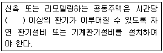
- 0.5회
- 1회
- 1.2회
- 1.5회
(정답률: 69%)
82. 다음은 건축법령상 다세대주택의 정의이다. ( )안에 알맞은 것은?
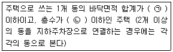
- ㉠ 330m2, ㉡ 3개 층
- ㉠ 330m2, ㉡ 4개 층
- ㉠ 660m2, ㉡ 3개 층
- ㉠ 660m2, ㉡ 4개 층
(정답률: 58%)
83. 공작물을 축조(건축물과 분리하여 축조하는 것을 말한다)할 때 특별자치시장·특별자치도지사 또는 시장·군수·구청장에게 신고를 하여야 하는 대상 공작물 기준으로 옳은 것은?(2020년 12월 15일 개정된 규정 적용됨)
- 높이 4m를 넘는 굴뚝
- 높이 2m를 넘는 담장
- 높이 3m를 넘는 장식탑
- 높이 2m를 넘는 광고탑
(정답률: 59%)
84. 다음 그림과 같은 대지의 대지 면적은?
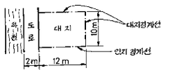
- 90m2
- 100m2
- 110m2
- 120m2
(정답률: 67%)
85. 건축허가신청에 필요한 기본설계도서 중 배치도에 표시하여야 할 사항에 속하지 않는 것은?
- 축척 및 방위
- 대지의 종·횡단면도
- 방화구획 및 방화문의 위치
- 대지에 접한 도로의 길이 및 너비
(정답률: 63%)
86. 승용승강기 설치 대상 건축물에서 승용승강기 설치 대수 산정에 직접적으로 이용되는 것은?
- 5층 이상의 바닥면적의 합계
- 6층 이상의 바닥면적의 합계
- 5층 이상의 거실면적의 합계
- 6층 이상의 거실면적의 합계
(정답률: 49%)
87. 건축법령상 주요구조부에 속하는 것은?
- 지붕틀
- 작은 보
- 사이 기둥
- 최하층 바닥
(정답률: 67%)
88. 대지에 조경 등의 조치를 하여야 하는 건축물은? (단, 면적이 200m2 이상인 대지에 건축을 하는 경우)
- 축사
- 연면적의 합계가 1200m2인 공장
- 면적이 4500m2인 대지에 건축하는 공장
- 관리지역(지구단위계획구역으로 지정된 지역)의 건축물
(정답률: 61%)
89. 연면적 200m2를 초과하는 건축물에 설치하는 계단에 관한 기준 내용으로 옳지 않은 것은?
- 높이가 1m를 넘는 계단 및 계단참의 양옆에는 난간을 설치할 것
- 너비가 4m를 넘는 계단에는 계단의 중간에 너비 4m 이내마다 난간을 설치할 것
- 높이가 3m를 넘는 계단에는 높이 3m 이내마다 유효너비 120cm 이상의 계단참을 설치할 것
- 계단의 유효 높이(계단의 바닥 마감면부터 상부 구조체의 하부 마감면까지의 연직방향의 높이)는 2.1m 이상으로 할 것
(정답률: 61%)
90. 부설주차장 설치대상 시설물이 숙박시설인 경우, 부설주차장 설치기준 내용으로 옳은 것은?
- 시설면적 100m2당 1대
- 시설면적 150m2당 1대
- 시설면적 200m2당 1대
- 시설면적 300m2당 1대
(정답률: 61%)
91. 주차장법령상 다음과 같이 정의되는 주차장의 종류는?
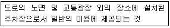
- 노상주차장
- 노외주차장
- 부설주차장
- 기계식주차장
(정답률: 73%)
92. 다음은 피난계단의 설치에 관한 기준 내용이다. ( )안에 알맞은 것은?(단, 갓복도식 공동주택 제외)
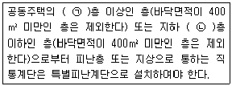
- ㉠ 11, ㉡ 3
- ㉠ 11, ㉡ 5
- ㉠ 16, ㉡ 3
- ㉠ 16, ㉡ 5
(정답률: 55%)
93. 특별피난계단의 구조에 관한 기준 내용으로 옳지 않은 것은?
- 계단실 및 부속실의 실내에 접하는 부분의 마감은 불연재료로 할 것
- 출입구의 유효너비는 0.9m 이상으로 하고 피난의 방향으로 열 수 있을 것
- 건축물의 내부에서 노대 또는 부속실로 통하는 출입구에는 갑종방화문을 설치할 것
- 계단실에서 노대 또는 부속실에서 접하는 부분에는 건축물의 내부와 접하는 창문 등을 설치하지 아니할 것
(정답률: 64%)
94. 다음은 사용승인신청과 관련된 기준 내용이다. ( )안에 알맞은 것은?
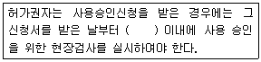
- 3일
- 5일
- 7일
- 10일
(정답률: 65%)
95. 다음 중 허가대상건축물이라 하더라도 미리 특별자치시장 · 특별자치도지사 또는 시장 · 군수 · 구청장에게 국토교통부령으로 정하는 바에 따라 신고를 하면 건축허가를 받은 것으로 볼 수 있는 경우에 관한 기준 내용으로 옳지 않은 것은?(단, 3층 미만의 건축물인 경우)
- 바닥면적의 합계가 85m2 이내의 증축
- 바닥면적의 합계가 85m2 이내의 개축
- 바닥면적의 합계가 85m2 이내의 재축
- 바닥면적의 합계가 85m2 이내의 신축
(정답률: 57%)
96. 노외주차장의 출입구 너비는 최소 얼마 이상으로 하여야 하는가? (단, 주차대수 규모가 30대인 경우)
- 2.5m
- 3.0m
- 3.5m
- 4.0m
(정답률: 63%)
97. 주차장 주차단위구획의 크기 기준으로 옳은 것은?(단, 평행주차형식인 경우이며, 일반형)
- 너비 1.7m 이상, 길이 4.5m 이상
- 너비 2.0m 이상, 길이 6.0m 이상
- 너비 2.0m 이상, 길이 5.0m 이상
- 너비 2.3m 이상, 길이 5.0m 이상
(정답률: 57%)
98. 국토의 계획 및 이용에 관한 법령상 공동주택 중심의 양호한 주거환경을 보호하기 위하여 지정하는 지역은?
- 제1종 전용주거지역
- 제2종 전용주거지역
- 제1종 일반주거지역
- 제2종 일반주거지역
(정답률: 57%)
99. 국토의 계획 및 이용에 관한 법률에 따른 용도 지역의 건폐율 기준으로 옳지 않은 것은?
- 주거지역 : 70% 이하
- 상업지역 : 80% 이하
- 공업지역 : 70% 이하
- 녹지지역 : 20% 이하
(정답률: 61%)
100. 다음은 같은 건축물 안에 공동주택과 위락시설을 함께 설치하고자 하는 경우에 관한 기준 내용이다. ( )안에 알맞은 것은?
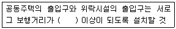
- 10m
- 20m
- 30m
- 50m
(정답률: 66%)